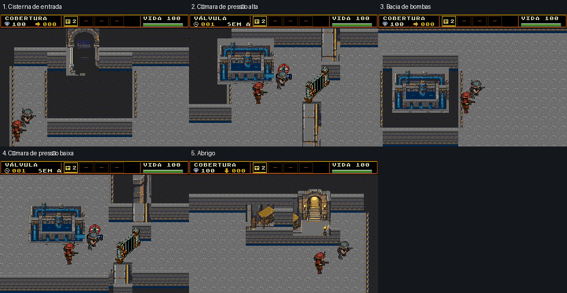
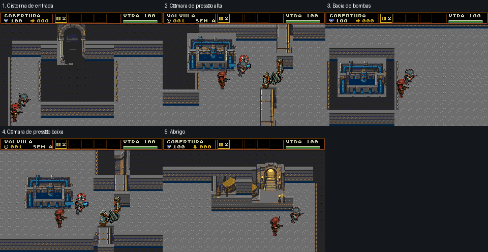
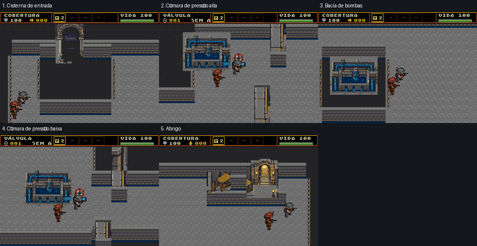

6B · proposta isolada de materiais
Concreto e carvão com grão de 1 px extraído do native04. Geometria e sprites de objetivos preservados. Ainda não aprovada nem ativada.
Manifesto · Ressalvas/provas
Cenário completo em1x
Cinco câmeras normais
Composições nativas com HUD/atores existentes; não são novas capturas do emulador.

Transição das portas e válvulas existentes
Mesmas coordenadas e mesmos sprites globais. Colapso temporário e passagem aberta.


Limites
- This changes materials only: existing long corridor composition, native outlines, pumps, bays and gates remain. It does not claim to redesign the spatial macrocomposition.
- The 16x16 material is repeated exactly; sparse 1px grain can still reveal repetition at enlarged viewing scale.
- Dark drainage is conveyed by charcoal pigment and depth of existing banks; blue pipework remains on mechanical equipment.
- Cameras are native composed previews at previously measured legal runtime coordinates. Actor placement is illustrative; no new emulator or gameplay measurement is claimed.
- Root/user whole-map and private-ROM review is still required; tile and geometry checks are not visual approval.